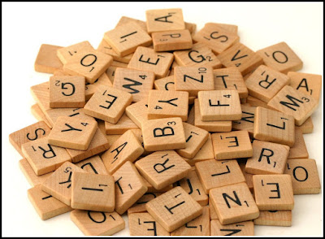
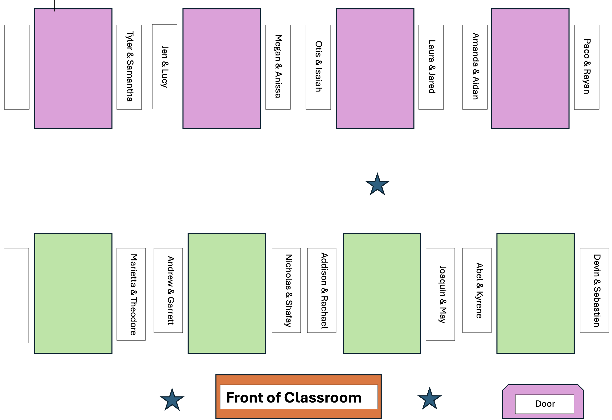
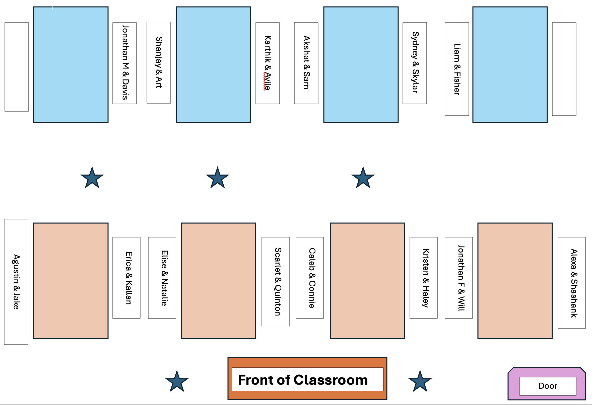

my_string <- "Hi, my name is Bond!"
my_stringstringr to Work with StringsToday we will…
stringr
lubridate
dplyr + stringr + ludridateA string is a bunch of characters.
There is a difference between…
…a string (many characters, one object)…
and
…a character vector (vector of strings).
We’ve encountered a lot of strings before in the datasets we’ve worked with.
penguins
colleges
military
Until now, we’ve taken for granted the values of these string variables, but today we’re going to learn how to use expressions to look for and / or modify specific values!
For the colleges dataset:
stringrCommon tasks
Note
stringr package loads with tidyverse.str_xxx().string =None of the stringr functions have a .data = argument! These functions only accept a character vector (string =) as an input.
So, these functions will need to be combined with functions from dplyr to work with a dataset!
pattern =The pattern argument appears in many stringr functions.
Let’s talk more about what some of these symbols mean.
“Regular expressions are a very terse language that allow you to describe patterns in strings.”
R for Data Science
…are tricky!
We’re going to focus on:
^ $+ *{}()[][ ] – specifies a range of characters.
[^ ] – specifies characters not to match on
str_detect()Returns a logical vector indicating whether the pattern was found in each element of the supplied vector.
filter()summarise()
sum (to get total matches)mean (to get proportion of matches)str_detect() with filter()Which colleges in the dataset have “Polytechnic” in their name?
str_detect() with summarize()How many colleges in the
collegesdataset have “Polytechnic” in their name?
str_replace()replace the first matched pattern in each string
str_replace() with mutate()Make capitalization of “University” consistent
str_remove()remove the first matched pattern in each string
Related Functions
This is a special case of str_replace(x, pattern, replacement = "").
str_remove() with mutate()Remove “College” or “University” at the end of each name so only the main institution name remains.
str_length()returns number of elements (characters) of a string
shorten or lengthen a string to a specified length
Convert letters in a string to a specific capitalization format.
str_trim()removes whitespace from start and end of string
str_c()join multiple strings into a single character vector
Note
Similar to paste() and paste0() but with more precision.
Refer to the stringr cheatsheet
Refer to your handout!
Remember that str_xxx functions need the first argument to be a vector of strings, not a dataset!
dplyr verbs like filter() or mutate().In this activity, you will use functions from the stringr package and regular expressions to decode a message.

dplyrstringr functions for previewing string contentsstringr functions for removing whitespacestringr functions for truncating stringsstringr functions for replacing patternsstringr functions for combining multiple stringsNone of us have all these abilities. Each of us has some of these abilities.
During the Practice Activity, you are not permitted to use Google or ChatGPT for help. . . .
You are permitted to use:
stringr cheatsheet,Submit the name of the movie the quote is from.

The person who has the most pets starts as the Typer (listening to explanations from the Talker)!

The person who has the most pets starts as the Typer (listening to explanations from the Talker)!